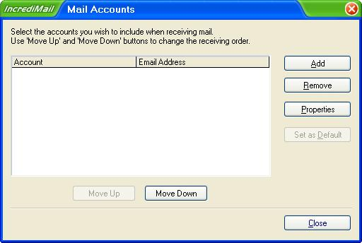
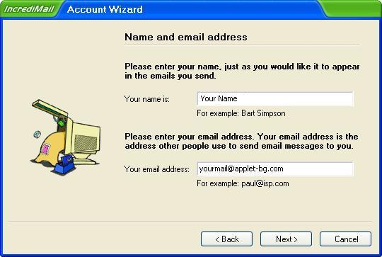
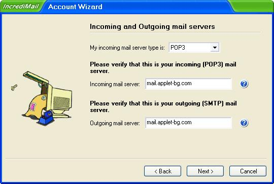
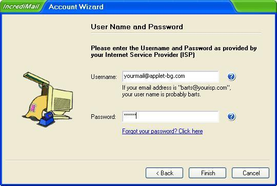
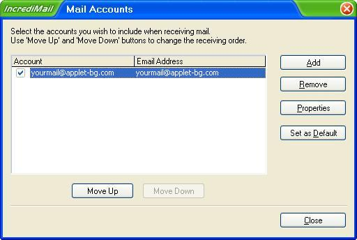
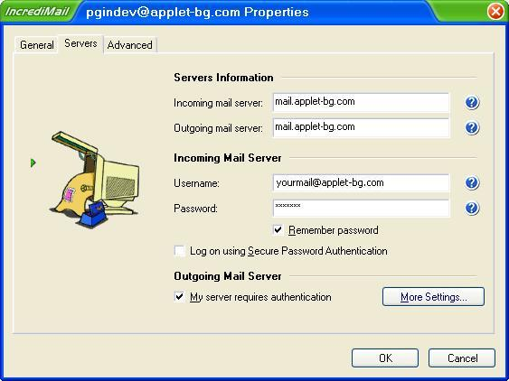

Конфигуриране на IncrediMail
След като стартирате програмата, изберете от основното меню "Tools" -> "Accounts..." и натиснете "Add" ->

Изберете "Let me configure settings myself", натиснете бутон "Next" ->

В полето "Your name is:" - напишете вашето име, в полето "Your email address:" - “youremail@mail.applet-bg.com”, или е-мейл към вашият домейн хостван от Аплет и натиснете бутона "Next" ->

В полето ”My incoming mail server type is ”, Изберете POP3 ->
В полето ”Incoming Mail server”, напишете "mail.applet-bg.com", или вашият е-мейл сървер хостван от Аплет ->
В полето ”Outgoing Mail server”, напишете "mail.applet-bg.com", или вашият е-мейл сървер хостван от Аплет и натиснете бутонa "Next" ->

В полето ”Username:”, напишете вашият е-маил адрес или е-мейл към вашият домейн хостван от Аплет ->
В полето ”Password:”, напишете вашата парола, натиснете бутонa "Finish" ->

лед като натиснете "Finish" на предния прозорец, остава отворен прозореца "Mail Accounts", в който има списък с въведените в IncrediMail пощенски кутии. Избирате тази, която въведохте току що и натиснете бутона "Properties"

В Tab ”Servers” отмятаме "My server requires authentication", натискате бутона "OK", след него "Close"

Ако всичко е настроено вярно и ИМАТЕ ИНТЕРНЕТ то тогава ще се появи презорчето за проверяване на поща.